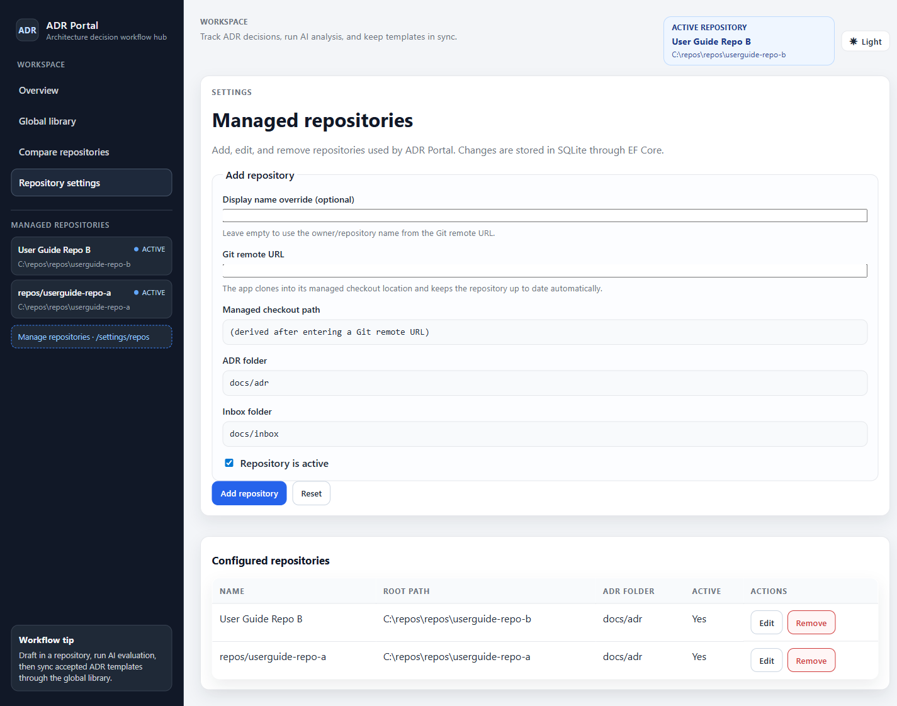
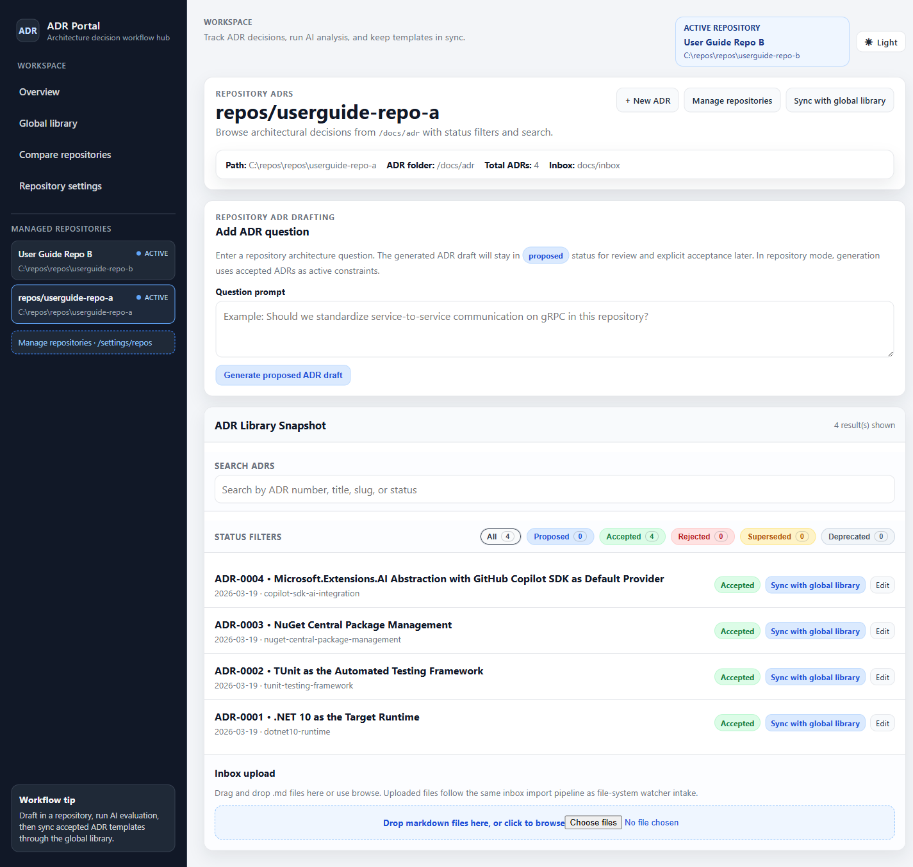
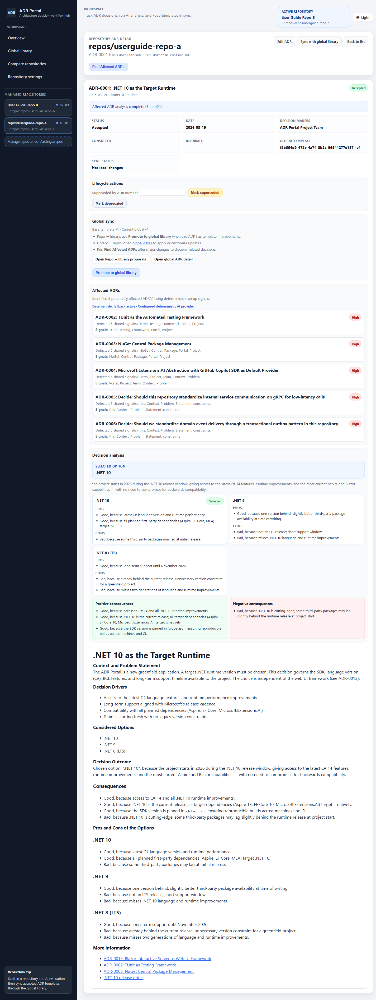
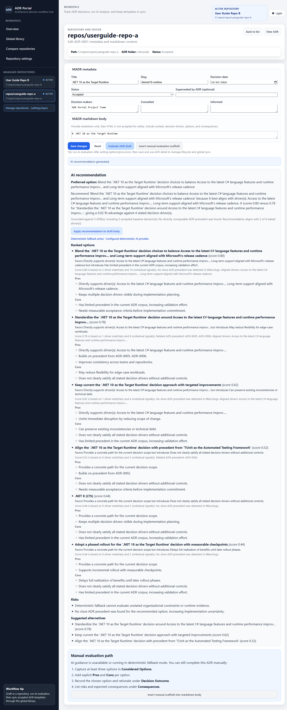
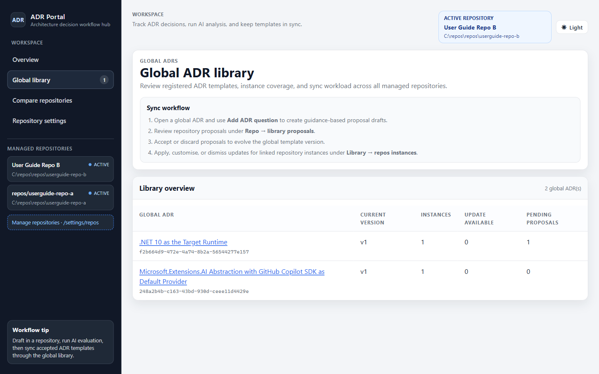
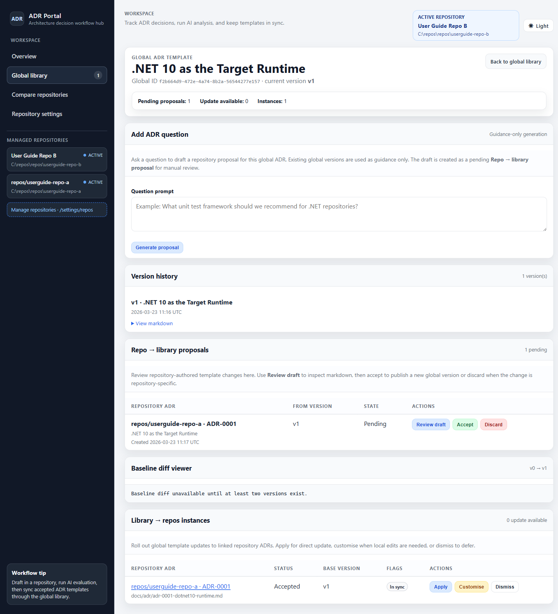
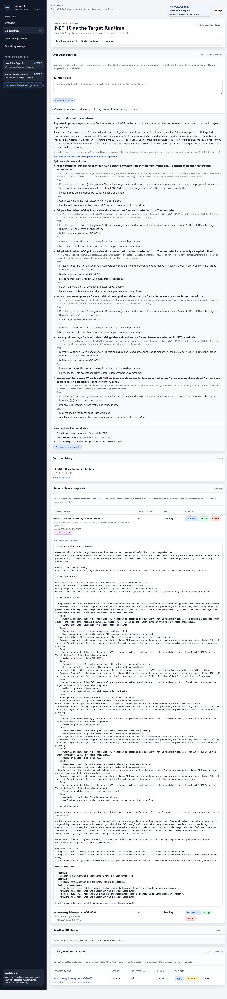
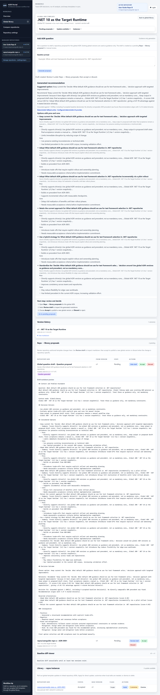
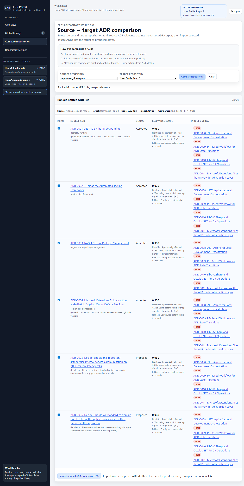

ADR Portal User Guide
This guide documents the currently implemented ADR Portal user workflows for repository ADR authoring, AI-assisted drafting/evaluation, global template synchronization, and cross-repository comparison/import.
Scope note: this page intentionally describes existing behavior only. It does not include roadmap or future-state features.
Quick start (first-time setup)
- Open
/settings/reposand add at least one repository using its Git remote URL. - Open that repository at
/repos/{repositoryId}. - Create a new ADR (
+ New ADR) or generate a proposed draft with Add ADR question. - Review ADR detail, then run lifecycle actions (Accept/Reject/Supersede/Deprecate) as needed.
- Use Promote to global library to register or propose template updates.
Compare/import workflows require two configured repositories. Global sync workflows require at least one accepted ADR.
Repository management
Repository setup is performed on /settings/repos.
- Add a repository using a Git remote URL (display name override is optional).
- Root checkout path is inferred from the remote and displayed as a preview before save.
- Default folders are
docs/adr(ADR content) anddocs/inbox(inbox import). - Mark repositories active/inactive, edit existing entries, or remove entries.
- Leaving display name blank uses an inferred
owner/repositoryname from the remote URL.
Changes refresh the managed repository catalog and inbox watcher registrations.

assets/user-guide/2-settings-repos.png) with add/edit controls, inferred path previews, and repository list actions.
Repository ADR workflows
Repository ADR list (/repos/{repositoryId})
- Browse ADRs with status chips and full-text search (number, title, slug, status).
- Create a new ADR draft or open ADR detail/edit views.
- Use Add ADR question to generate a proposed ADR draft from a repository question prompt.
- Repository question generation uses accepted repository ADRs as active constraints.
- On empty ADR libraries, run Bootstrap ADRs with AI, review proposal cards, and accept selected proposals.
- Use inbox upload to import
.mdfiles through the same inbox import pipeline as watcher intake. - Question-generated, bootstrap-generated, and imported drafts are created as Proposed and require review.

assets/user-guide/3-repo-adr-list.png) showing list filters, question-based draft generation, and ADR actions.
Repository ADR detail (/repos/{repositoryId}/adr/{number})
- Review full ADR content, metadata, structured decision sections, and status badge.
- Run lifecycle transitions: Accept, Reject, Supersede, and Deprecate (based on current status).
- Run Find Affected ADRs to analyze related ADR impacts.
- Use Promote to global library to create or update global template proposals.
- Review global sync status (template linkage, base version, pending proposal/update availability).
- When available, follow deep links to Repo → library proposals and global detail rollout actions.

assets/user-guide/4-repo-adr-detail.png) with lifecycle transitions, affected ADR analysis, and sync actions.
Repository ADR editor (/repos/{repositoryId}/adr/new and /edit)
- Edit MADR metadata (title, slug, date, status, decision makers, consulted, informed, superseded-by number).
- Edit markdown body with standard MADR sections.
- Run Evaluate ADR draft for AI recommendation and ranked option analysis.
- Apply recommendation output back into the draft body.
- Insert manual evaluation scaffold when AI guidance is unavailable/fallback.
The editor accepts markdown body content; raw HTML content is rejected for safety.

assets/user-guide/5-repo-adr-editor.png) with metadata fields, markdown authoring, and recommendation actions.
Global library workflows
Global ADR library overview (/global)
- View all registered global ADR templates with current version numbers.
- Track instance count, update-available count, and pending proposal count.
- Open any global ADR detail for proposal triage and instance update actions.

assets/user-guide/6-global-library-overview.png) for sync workload triage across repositories.
Global ADR detail (/global/{globalId})
- Review global ADR stats, version history, and baseline text diff between latest versions.
- Manage Repo → library proposals: review draft markdown, accept, or discard.
- Question-generated proposals are labeled and reviewed through the same proposal triage table.
- Manage Library → repos instances: apply update, customise, or dismiss update notifications.

assets/user-guide/7-global-adr-detail.png) with proposal review and instance rollout controls.
Question-generated global proposal path
- Use Add ADR question to generate guidance-based proposal content for the selected global ADR.
- The generated draft is inserted as a pending proposal under Repo → library proposals.
- Use Review draft then accept/discard to complete triage.

assets/user-guide/8-global-question-generated.png) in global detail.

assets/user-guide/9-repo-library-proposals-preview.png) before accept/discard.
Cross-repository compare/import
The compare workflow (/compare) ranks source ADRs against a target repository ADR corpus, then imports selected source ADRs as proposed drafts.
- Select distinct source and target repositories.
- Run comparison to compute relevance score and target overlap candidates.
- Select source ADR rows and import into the target as proposed ADRs with remapped numbers.
- Review imported ADRs from the import result section and continue lifecycle/sync actions from ADR detail pages.

assets/user-guide/10-compare-repositories.png) including ranked source ADRs and import result.
AI-assisted features
- Repository question → proposed ADR draft: generate a draft ADR from a repository-specific architecture question.
- Draft evaluation: evaluate ADR options, recommendation, risks, and alternatives from the editor.
- Affected ADR analysis: find potentially impacted ADRs from a repository ADR detail page.
- Bootstrap for empty ADR libraries: scan codebase, generate proposal cards, and accept selected drafts.
- Global question guidance: generate question-based proposal content for a global ADR template.
- Cross-repository relevance scoring: ranking in compare view is AI-assisted and surfaced with score/summary/fallback metadata.
When AI providers are unavailable, the portal can surface deterministic fallback messaging while keeping manual review workflows available.
Sync workflows
Repository → Global library
- Open repository ADR detail and use Promote to global library.
- If unlinked, promotion creates a new global template and links ADR metadata (
global-id,global-version). - If linked and locally changed, promotion creates a pending Repo → library proposal for review.
Global library proposal triage
- Open global ADR detail and inspect Repo → library proposals.
- Use Review draft to inspect markdown.
- Accept to publish next global version, or discard to close without publishing.
Global library → Repository instances
- Use Library → repos instances table for rollout decisions.
- Apply updates ADR content/status from current global version.
- Customise marks the instance as customised against the current version.
- Dismiss clears the current update notification without applying template content.
Common prerequisites and caveats
- Most workflows require at least one configured repository; compare requires at least two.
- Repository Git remote URL is required in settings; checkout path and display defaults are inferred from it.
- Compare requires distinct source and target repositories.
- Inbox import accepts markdown files (
.md) and enforces size/content validation (including upload size limits). - Question-generated and compare-imported ADRs are created in Proposed status and require explicit review/transition.
- Global Add ADR question creates a pending proposal entry for manual accept/discard review.
- Promote-to-global can be unavailable when a pending proposal already exists or when no local template changes are detected.
- Global update actions target ADR instances linked by global ID/version metadata.
- If AI providers are unavailable, deterministic fallback output is shown and manual review paths remain available.
- Git remote configuration is required for queued Git/PR automation paths where those workflows are enabled.